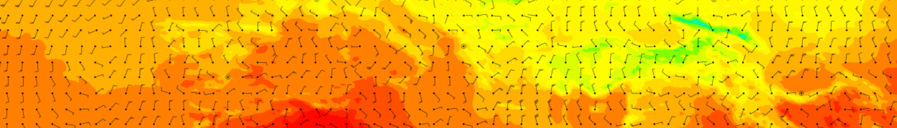

About me

Find out more about me here:
ECMWF profile
- Learn more about my work at ECMWF
Twitter
LinkedIn
GitHub
- See what codes I work on
Links
NEWS:
Heise news
/
Phoronix
/
nextplatform.com
C++:
C++ Reference
/
The C++ Source
/
ACCU
Graphics APIs:
Cairo
/
Gd
/
OpenGL
(
Mesa
) /
Coin3D
GIS:
QGIS
/
TerraLib
GUI:
Qt /
QtCreator
Formats:
SVG
/
X3D
/
KML
Compilers:
Intel
/
Cray (
ARCHER documentation
)
Debuggers:
TotalView
/
Allinea DDT
/
GDB
Performance analysis:
valgrind
/
KCacheGrind
/
Valkyrie
/
Vampir
Mathematica
:
DocCenter
WolframAlpha
Linux Magazin (de)
/
Linux Magzine (uk)
Weather
Royal Meteorological Society
UK Met Office
Rainfall radar page
Forecasts on iPhone and iPod touch
Weather gadgets for web browsers
Donnerwetter
– German weather information
Forecastfox
– Firefox extension to get weather information
NOAA Education Resources
Library fact sheets
MetEd
– Teaching and Training Resources for the Geoscience Community
Weather and Climate Activities to Explore the Atmosphere
WeatherWise
promet
– Journal from the DWD (German)
Genealogy
PhpGedView
Gramps
– Free software project for genealogy